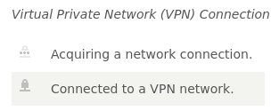
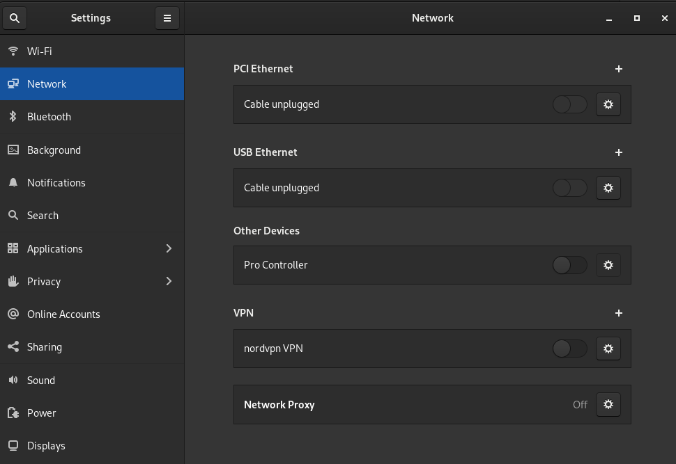
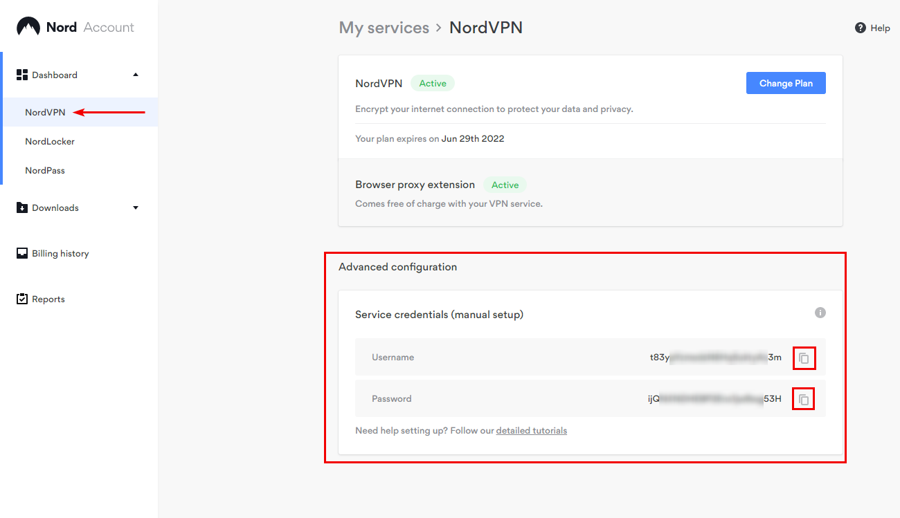
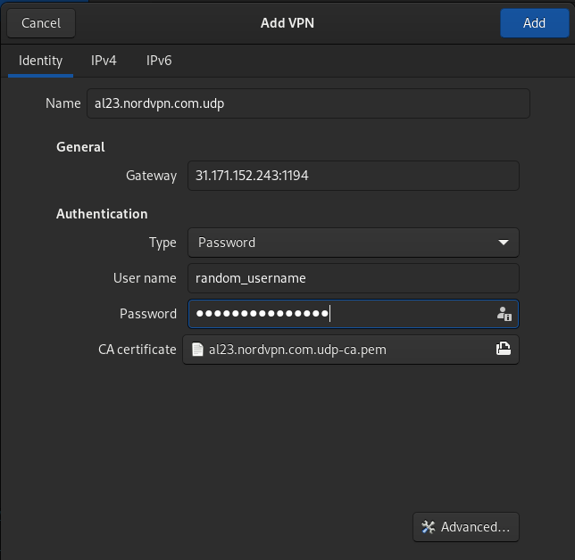

I recently decided it is about time to start using a VPN for personal use. Although there are many reasons for one to use a VPN such as masking your IP address and location, I only want to get a VPN to encrypt my traffic on Public Wifi. VPN can be great to bypass region locking, but I rarely ever have any issues with this. The VPN provider I chose is NordVPN for no particular reason other than there was a summer deal and is a strong choice for Linux users.
Background
While the service was great for a few weeks, their CLI program nordvpn stopped working for me. The program will not let me connect to any
VPN servers because my account has been apparently “expired” despite the program explicitly stating my account is active till 2023.
$ nordvpn login
Please enter your login details.
Email: <omitted>
Password: <ommitted>
Welcome to NordVPN! You can now connect to VPN by using 'nordvpn connect'.
$ nordvpn account
Account Information:
Email Address: <omitted>
VPN Service: Active (Expires on Oct 11th, 2023)
$ nordvpn connect
Opening the web browser...
If nothing happens, please visit https://join.nordvpn.com/order/?utm_medium=app&utm_source=linux
-Your account has expired. Renew your subscription now to continue enjoying the ultimate privacy and security with NordVPN.
After talking with customer service back and forth, the representive stated this is a known issue with no estimated timeline. But they did give me an alternative method to connect to the VPN which is the main topic of today’s post.
The error message you are receiving is known and our developers are already working on a solution. Unfortunately, we would rather not give you an estimation when we do not actually have one for certain.
Using GNOME VPN Plugin
The rep pointed me to their page on How can I connect to NordVPN using Linux Terminal.
This method is manual in the sense that you cannot set the VPN to switch networks automatically based on the network speed nor is it easy to swap VPN servers since you need to know the full OVPN path which is tedious to type and remember (i.e. /etc/openvpn/ovpn_udp/fr773.nordvpn.com.udp.ovpn)
GNOME has a NetworkManager VPN Plugin
which you can use to have a GUI interface to easily turn on or off the VPN. It’s quite a nice feature to have since you can quickly identify if the VPN is turned on by peaking at the system menu on the top right corner
and see the lock icon. Though it will not solve the issue with swapping VPN servers automatically based on network speed and can be a pain to switch VPN servers.

Setting up the VPN via GNOME VPN Plugin is quite simple. On the Settings window, go on the Network side tab. You will be presented with different network options. Under the VPN section, you will see a + icon to add a VPN connection.

You will be presented with a popup dialog box where it’ll present you with different options to connect to the VPN. We will be importing from a file. Select the OVPN (OpenVPN Pro File) that gives you the fastest connection which you can find out on NordVPN’s webpage. The OVPN contains the access configurations and the CA needed to create the connection. You will also need the service credentials which you can find on Nord Account Dashboard.


Now you have a very convenient place to connect to the VPN that is not through the terminal.